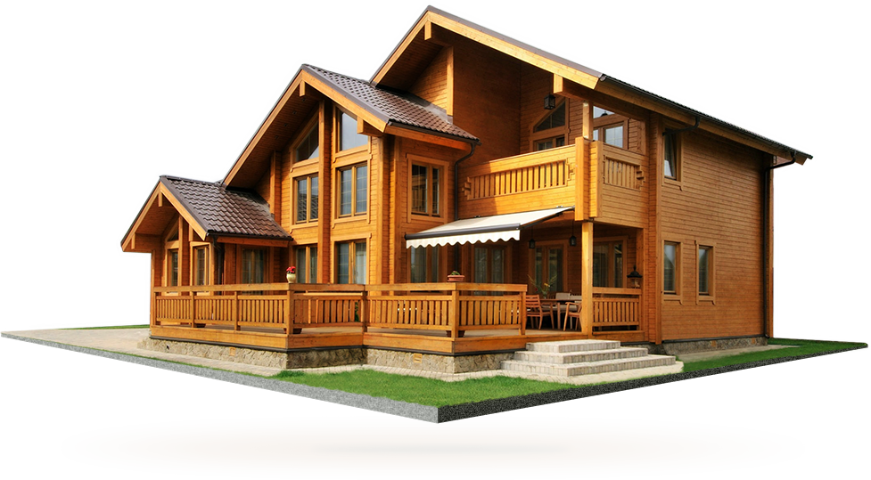

<ion-header>
  <ion-navbar>

  </ion-navbar>
</ion-header>

<ion-content padding>

  <!-- to show list of organization -->
  <div>
      
      <button ion-button (click)="Userprofile()">user profile</button>
      <div *ngFor="let a of orgArray" class="cards">
        <ion-item (click)="goToViewPage(a.orgName)" no-padding no-lines>
          <ion-thumbnail item-start large>
            
          </ion-thumbnail>
          {{a.orgName}}
        </ion-item>
      </div>
  </div>


  <!-- show map -->
  <div>
      <div #map id="map">


        </div>
      
        <button ion-button  (click)="getDirection()">get Direction</button>
        <button ion-button  (click)="getDistance()">get distance</button>
      
        <div *ngFor="">
      
        </div>
  </div>


 
</ion-content>
